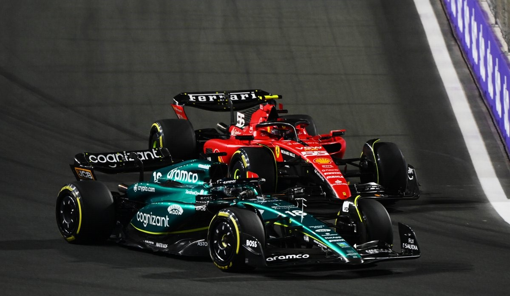

Gp dell' Arabia Saudita
L’unica nota positiva del fine settimana saudita è Charles Leclerc (costretto però ad un weekend tutto in salita per la penalità di 10 posizioni in griglia a causa dei problemi di affidabilità alle centraline in Bahrain), mentre tutto il resto lascia a desiderare. Carlos Sainz ha fatto tanta fatica e la SF-23 si è dimostrata la quarta forza in campo nel secondo stint del GP con gomme hard, dopo la beffa per il pessimo tempismo della Safety Car.
Prestazione deludente!
